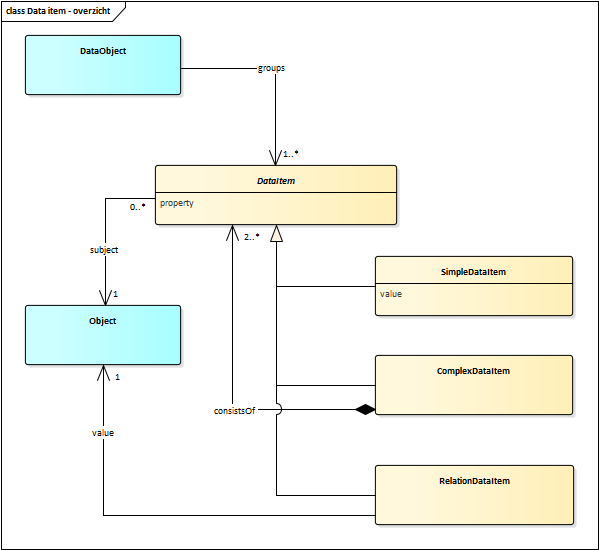
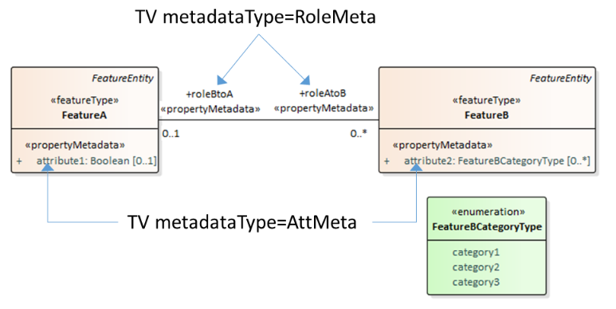
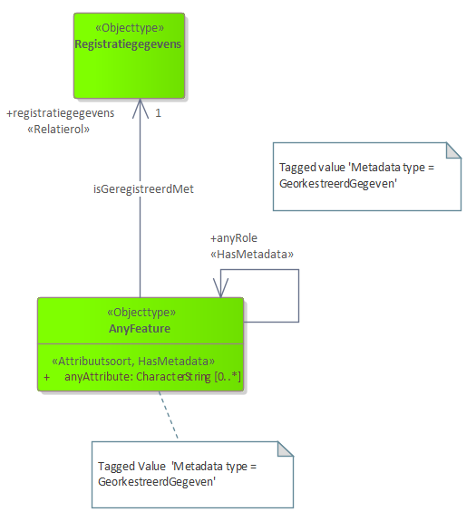
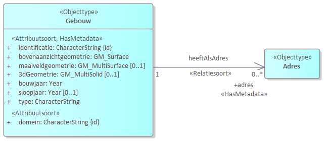

"Metadata provide information about data. To relate information at the property level of objects a vocabulary is created that supports this. This model objectifies data about a specific property of an object. The vocabulary is implemented as an extension on UML and on MIM-UML.
Status of this document
This is a stable draft, published for public comment. Comments regarding this document may be sent to
1. Introduction
Kadaster and Geonovum are developing a mechanism to facilitate the semantic integration of decentralized data registers. A central API operates on an integrated semantic layer. The semantic layer consists of a coherent information model integrating several domain-specific domain models. An API orchestration layer directs data communication to and from existing data registries.
The data retrieval schema is in accordance with the logical data model of the semantic layer. Data retrieval will optionally include metadata about the lineage (provenance) of each singular piece of data about a resource.
This document describes a proposed standard for describing data items.
1.1 Target audience
Information modeller, API developer, IT architect.
1.2 Introduction to document
Chapter 2. Vocabulary introduces a conceptual model for data items. Since this model describes how data can be described it is considered a metadata model.
In chapter 3. Metadata MIM extension this vocabulary is applied and an extension to [MIM] that allows to connect a model element in an information model to a model element in a metadata model is introduced.
2. Vocabulary
In order to provide metadata about any singular piece of data about a resource, we need to be able to talk about it and in turn capture data about it. The first notion we introduce is the data item. Data objects we utilize to draw insights from, or base decisions on, are comprised out of multiple atomic units of data, each captured by one attribute or association. Consider the following data object in JSON:
<http://example.com/id/adres/0200200000075716>agebouw:Adres;gebouw:postcode"7334DP";
gebouw:huisnummer701;
gebouw:identificatie"0200200000075716";
gebouw:omschrijving"Laan van Westenenk 701, 7334DP Apeldoorn";
nen3610:registratiegegevens<http://example.com/base/registratiegegevens-0200200000075716>>;
gebouw:straatnaam"Laan van Westenenk";
gebouw:plaatsnaam"Apeldoorn";
gebouw:isHoofdadrestrue .
Each data item can have its own lineage; its own description of how and when it was created. Treating these data items as objects; allows us to describe and provide data about them. For instance to state that { "plaatsnaam": "Apeldoorn" } is derived from a data item in the BAG.
In the following diagram both the object and the data items are modelled as a type of object, as they are things; objects, we are interested in describing.
A data item can be described from different points of view. The perspective a lineage model would take is one of provenance. Questions to be answered include, for instance, where, how and by whom, data items such as Building G0200.42b3d39246840268e0530a0a28492340 has construction date 2006 are created. Other models could address other aspects of a data item; for instance whether it is subject to an examination of correctness (which could be relevant for the BAG: https://catalogus.kadaster.nl/bag/nl/page/InOnderzoek) or what is the quality of a data item.

Figure 4Basic model of object and related data by different type of data items
3. Metadata MIM extension
For this extention a common solution to relate metadata to semantics of a logical data model is provided.
3.1 Requirements
The extention provides a metamodel to model metadata - data about =[data items=].
Requirements of for this metamodel in this respect are the following:
bind metadata models at the property level of object types
ability to express metadata at the level of data items
metadata can optionally be published
metadata model does not have effect on the structure of a logical data model
ad 1,2: MIM-UML does not have a construct to bind (meta)data to properties, i.e. attributes or association ends. It is therefore necessary to extend MIM-UML.
ad 3,4: The metadata is modelled independently from the logical data model. Both are 'loosely' connected.
An approach to these requirements can be found in the [Property-Stereotype-for-Metadata]. This publication presents a UML profile extension of [iso-19109-2015] through a stereotype «propertyMetadata» and a tagged value metadataType. An example is presented below.

Figure 5Example showing use of stereotype: Properties with stereotype «HasMetadata» reference metadata types via tagged value metadataType. Source:[Property-Stereotype-for-Metadata]
For this use case, the above presented pattern is slightly adapted by changing the stereotype name from «propertyMetadata» to a general «HasMetadata». The pattern is presented below on a general class AnyFeature representing any possible feature type in a logical data model.

Figure 6Metadata expressed at the conceptual level of a logical data model
3.2 Explanation and definition
Stereotype «HasMetadata»
Definition «HasMetadata» This element has associated metadata.
Description:
The stereotype specifies that this data element has metadata associated. This is a specification at the conceptual level. A related tagged value Metadata type specifies the association to specific metadata.
Tagged Value: Metadata type
Definition Metadata type Name of the target class of associated metadata.
Description:
This tagged value specifies the relation to a specific target class in a specific metadata model. This target class serves as the receptor defining the type of metadata that is associated.
In Figure 6 the value for Metadata type = GeorkestreerdGegeven is only an example and may differ according to the required metadata class that relates to the specified metadata.
3.3 MIM-UML extension
The defined stereotype and related tagged value lead to an extension of the MIM metamodel. As the extension for now is independent from MIM the extension is described both as an extension of the UML profile metamodel of the [iso-19109-2015] and the MIM-UML metamodel.
Figure 7Stereotype «HasMetadata» as extension on UML metaclass Property
This UML profile is implemented in a EA MDG Technology named HasMetadata_mdg.
Extension on MIM-UML
The metadata information as related to properties in the context of MIM relates to several MIM metaclasses. The «HasMetadata» stereotype is defined as an extension on these MIM classes.
Figure 8Stereotype «HasMetadata» as extension on MIM-UML metaclasses
Example of this Metadata profile applied in a MIM-UML model.

Figure 9Example of Stereotype «HasMetadata» applied in MIM-UML model
3.4 Implementation, encoding
The challenges regarding the implementation of this conceptual metadata construct vary across different encoding formats. For example in XML a construct exists to add attributes to XML elements, which provides a means to give attributes to properties, in this case reference to a metadata object. In JSON this does not exist. The «HasMetadata» stereotype is therefore extended with a model transformation that objectifies properties of a logical data model. The objectified properties are not part of the logical data model but serve as a loosely coupled intermediate binding mechanism between data and metadata.
The UML model of this pattern is presented below.
Figure 10Pattern for the Metadata binding model. Objectification of properties.
Explanation of diagram. The Metadata binding model serves as a model for the data elements of the logical data model allowing us to express data items as objects. Each property (attributes and association roles) is transfomed to an instance of the object type OrchestratedDataItem where the value of property is the property name. Depending on the type of property (or its associated value type) a SimpleDataItem, ComplexDataItem or the RelationDataItem is chosen.
SimpleDataItem for properties with a unstructured value types, ComplexDataItem for structured value types and RelationDataItem for association roles.
The value for a property is transformed to the value attribute or the value association role.
In this model there is no explicit link, expressed in a data structure, between a data value for a property in the original logical data model and its corresponding objectified data item. The link is there by definition, as defined in 2. Vocabulary, because the value for property and value equal the name of the property of the object type in the original logical data model and the data value, respectively.
Without specifying specifically for the three subtypes of OrchestratedDataItem the rule is: DataModel.property.name = DataItem.property.value AND DataModel.property.value = DataItem.value.value